Capturing Fleeting Moments, Tangibly.
We didn’t start with a grand business plan. We started with a shoebox.
Inside were old photos—faded, slightly bent, but full of life. And we realized: we don’t really hold our memories anymore. They sit in our phones, buried under screenshots and duplicate selfies. We scroll past them. We don’t feel them.
So we asked: what if we could bring that back? The anticipation of watching an image appear. The weight of a small print in your hand. The weird joy of a slightly overexposed shot that somehow feels more real than the perfect digital one.
That’s how PocketPolaroid came to be.
We’re not trying to reinvent photography. We’re just trying to make it physical again. Our little printer fits in your bag, connects to your phone, and turns your everyday moments—messy, beautiful, unpolished—into something you can stick on your wall, pass to a friend, or tuck into a journal.
No filters required. Just real life, printed.

auto_awesome Our Mission
Our mission is simple—we want to help people hold onto their memories in a way that feels real and personal. We take so many photos these days, but most of them never leave our phones. They sit in albums we rarely open, buried under screenshots and duplicates, and before we know it, they're forgotten. PocketPolaroid is here to change that by giving you an easy way to print your favorite moments without any hassle. We believe the best photos aren't the perfectly staged ones—they're the candid, imperfect, genuine shots that capture who you really are and what your life actually looks like. A blurry laugh with friends, a sleepy morning coffee, a sunset that made you stop and stare—those are the moments worth keeping close. We want to make printing those memories as simple as taking them, so you can stick them on your wall, tuck them into your wallet, or pass them to someone you love. Because when you hold a photo in your hands, it stops being just an image. It becomes a keepsake, a conversation starter, a little piece of your story that you can actually touch. That's what we're working toward every day.
lightbulb Our Vision
We envision a world where our most cherished memories aren't trapped behind glass screens, buried in apps we barely open. We imagine homes where walls and refrigerators are covered in tiny prints, where photo albums sit on coffee tables instead of collecting dust in the cloud, and where giving someone a physical photograph becomes a meaningful gesture again—not just a text message that gets lost in the chat. We see a future where people slow down long enough to choose a moment, print it, and actually feel it. A future where we don't wait for weddings or graduations to make memories tangible, but where every ordinary day gets its own little snapshot worth keeping. We want to build a culture that values the intentional act of remembering—not through scrolling, but through holding. A culture where the photos we love aren't just seen, but touched, shared, passed around, and looked back on for years to come. We believe that when we make printing easy and accessible, more people will realize how good it feels to own their memories in physical form. That's the world we're working toward—a world where every moment matters enough to be printed.
Meet Our Team
We're a quirky bunch of developers, designers, and dreamers united by our love for all things nostalgic and cute. Say hello to the faces behind the prints!
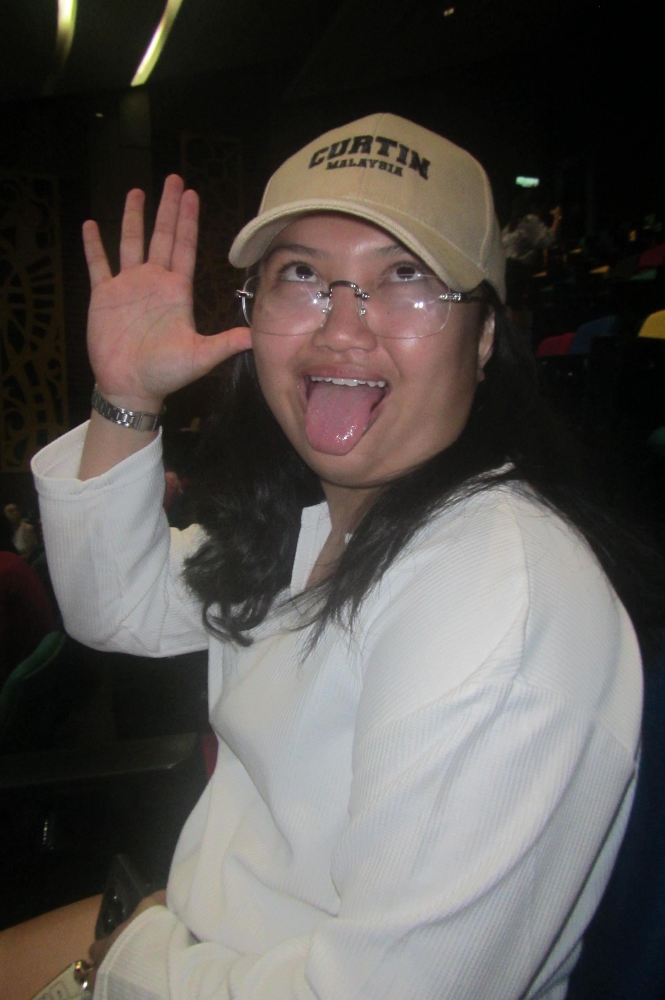
Nicole
My name is Nicole, and I am currently studying Health, Safety and Environment. I am passionate about learning new things and developing skills that will help me in my future career. Outside of my studies, I am a rugby player and a music lover who enjoys playing different musical instruments. I also love exploring new places, trying adventurous activities, and taking on new challenges that push me beyond my comfort zone. I consider myself an active, curious, and adventurous person who enjoys gaining new experiences. I am always ready for an exciting adventure, just make sure there are no snakes around! 🐍😂
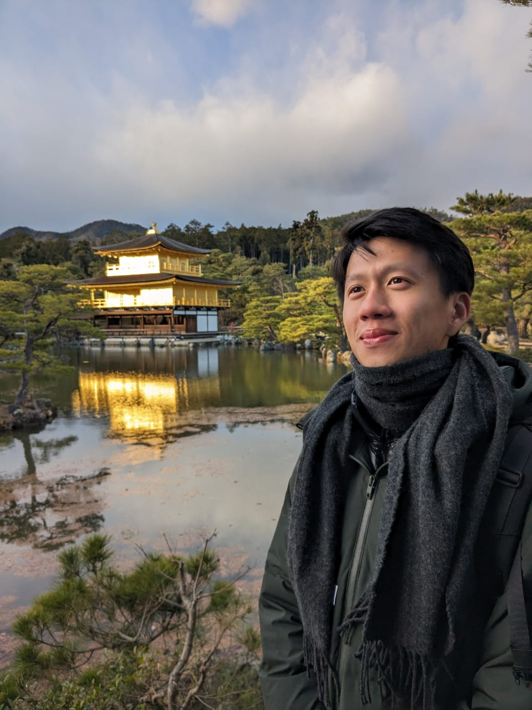
Mann
My name is mann. I'm aspiring to become a qualified health practitioner in order to support a community in the best way I can. I'm also interested in developing my interpersonal and writing skills. If I could turn back time, the only thing I would tell myself is to speak truthfully and have faith at whatever the consequence maybe. I enjoy reading, fishing, working out and hiking. In fact, I'm planning to climb Mt. Kinabalu during the holidays. I am fluent in English, despite the fact that I am Chinese, I do not speak mandarin at all. I am terrified of caterpillars and cockroaches. I enjoy watching videos of cooking on youtube, scrolling through Instagram and ChatGPT is my best friend.
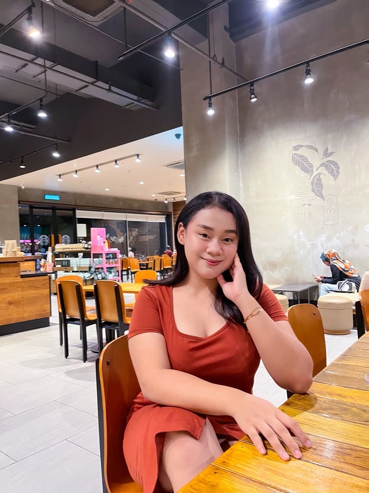
Aleeya
My name is Aleeya Isabella Anak Martin, a student from Miri, Sarawak, Malaysia, preparing to embark on my Bachelor’s journey after completing the English Bridging program. Music has always been close to my heart. I enjoy singing and have proudly won competitions that deepened my love for performance. In 2021, I also ventured into modeling under Miss Grand Miri, an experience that remains a memorable chapter in my life. With a foundation in electrical and electronic studies and a growing interest in investment, I strive to balance intellect with creativity. I aspire to cultivate a future defined by academic excellence, artistic expression, and personal refinement.
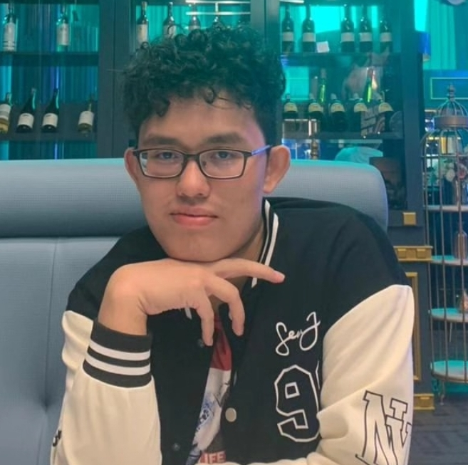
Jia Juin
Hi, my name is Jia Juin. You can just call me June. I am a business student studying Management & Marketing. The reason I choose this course is for my passion and pre existing knowledge towards the business world in general. I have often watched videos and read books regarding economics, geopolitics, history and some philosophy here and there as a side hobby. This course intrigues me because I can further understand the intricacies and due processes that goes on in the corporate world.I am deeply passionate with art&designs, storytelling, video games and the occasional political talks. I hope my that my skills will be useful to those around me and towards my community.
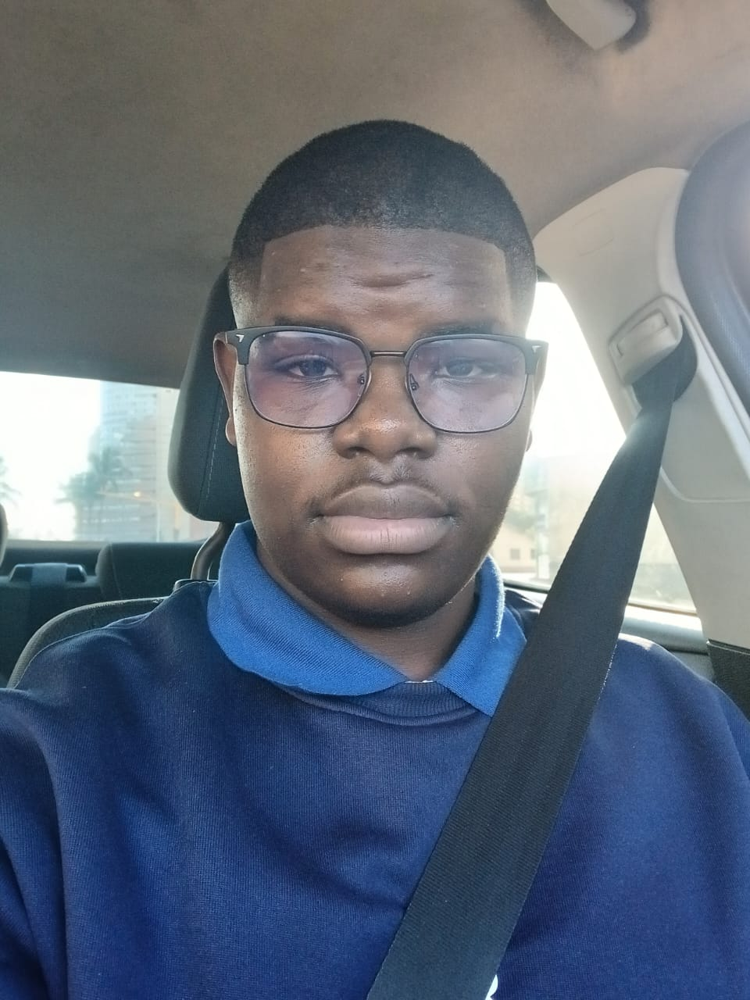
Maka
Hey I'm Maka a Computer Systems and Networking student and a little secret about me I love fried fish. I'm always smiling and bringing friendly vibes. During my free time I love learning new skills and playing video games. I have been able to learn how to crochet, solve the rubix cube, play sudoku, play chess and currently I am trying to improve my drawing skills. Most of my time is spent with my online friends playing Valorant or Fortnite and through out the years we have gone to know each other as if we were a family.
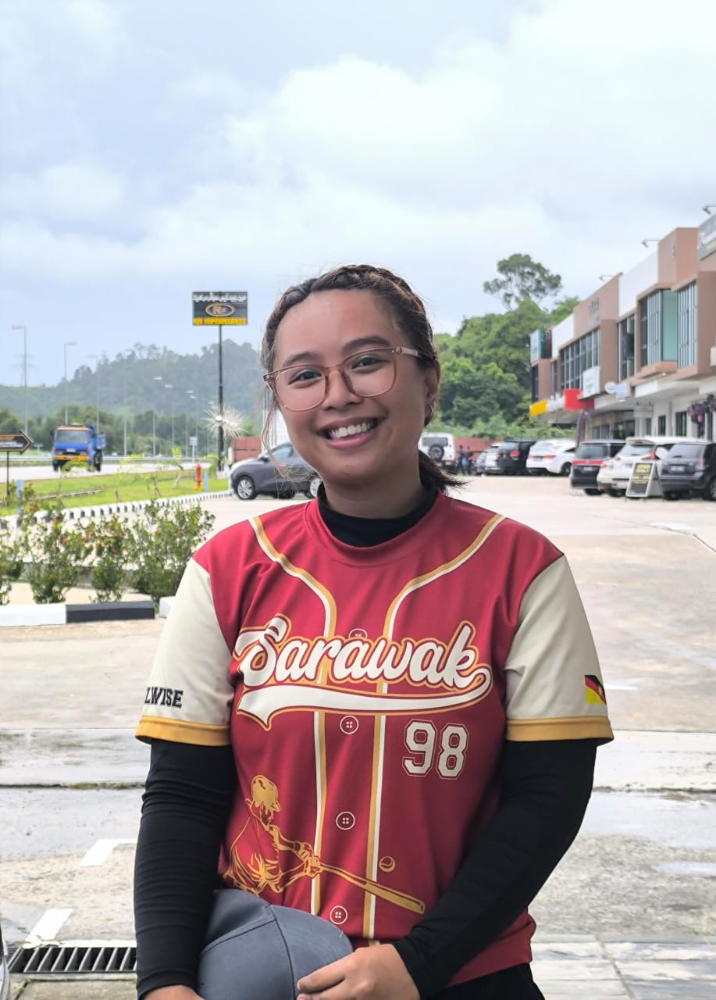
Eidelwise
I’m pretty easygoing and have a simple idea of a good time: loud music, a guitar, Stardew Valley, and a good nap. I’m really into glam metal and punk, and I can easily lose track of time playing guitar or farming pixels. I also play softball and used to represent Sarawak in SUKMA, which is a fun little part of my life. My roots are from one of Sarawak’s highland communities, so I’ve always felt more suited to cooler places. I absolutely cannot stand hot weather—I’d rather be freezing than sweating. If I’m not doing any of the above, I’m probably sleeping.
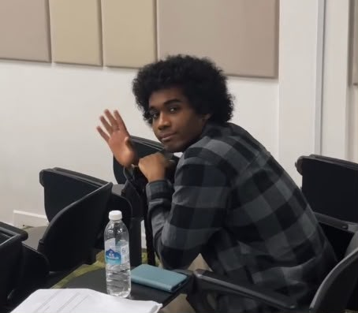
Abdallah
Hello, my name is Abdallah and I’m pursuing my Bachelor in Business Administration. I do theatre, martial arts such as Kendo and I like making latte art in my free time(even though I don’t drink coffee). I am still a novice in the things I do since I started those three quite recently in the grand scheme of things with 2 years for theatre, 6 months in kendo currently and a year for the latte art. The novelty has yet to wear off honestly since there is still much left to learn and I wish to keep on going and experiencing new things out there so I’m always out and about doing something random.
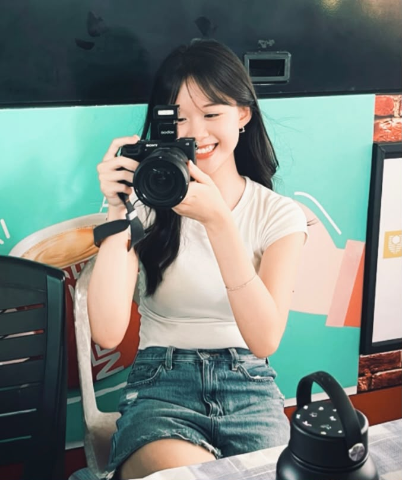
Chloey
Hi! I’m one of the people behind the booth! 👋 I’m basically here to make sure everything runs smoothly — from coming up with crazy ideas and promoting our booth to handling money, customers, and of course, the Polaroid prints! 📸 I love capturing little moments that might seem ordinary now but become precious memories later. My favourite part? Seeing people get excited when they hold their printed photos for the first time! We’re just students trying to turn a simple photo into a little memory you can take home. So come take a picture, strike your best pose, and let us do the printing magic! ✨💌
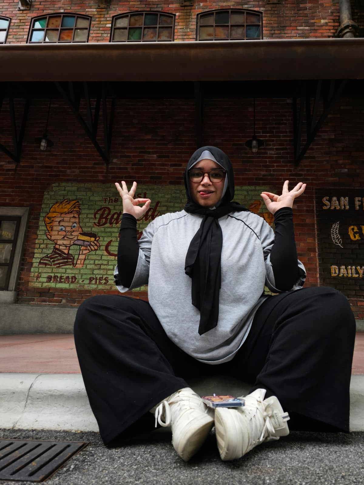
Sanaa
I’m Sanaa, a third-year Health, Safety and Environment student with a passion for helping people and creating safer environments. I’m passionate about learning, personal growth, and making a positive difference wherever I can. Outside of academics, I’m actively involved in Olympus Dodgeball Club, where I enjoy competing, working with a team, and organising events. I’m also interested in psychology and understanding how people overcome challenges. I believe in being kind, passionate, and genuine, and I hope to spread those qualities through the way I treat and support others. My goal is to keep growing, learning, and using my knowledge to make a difference.
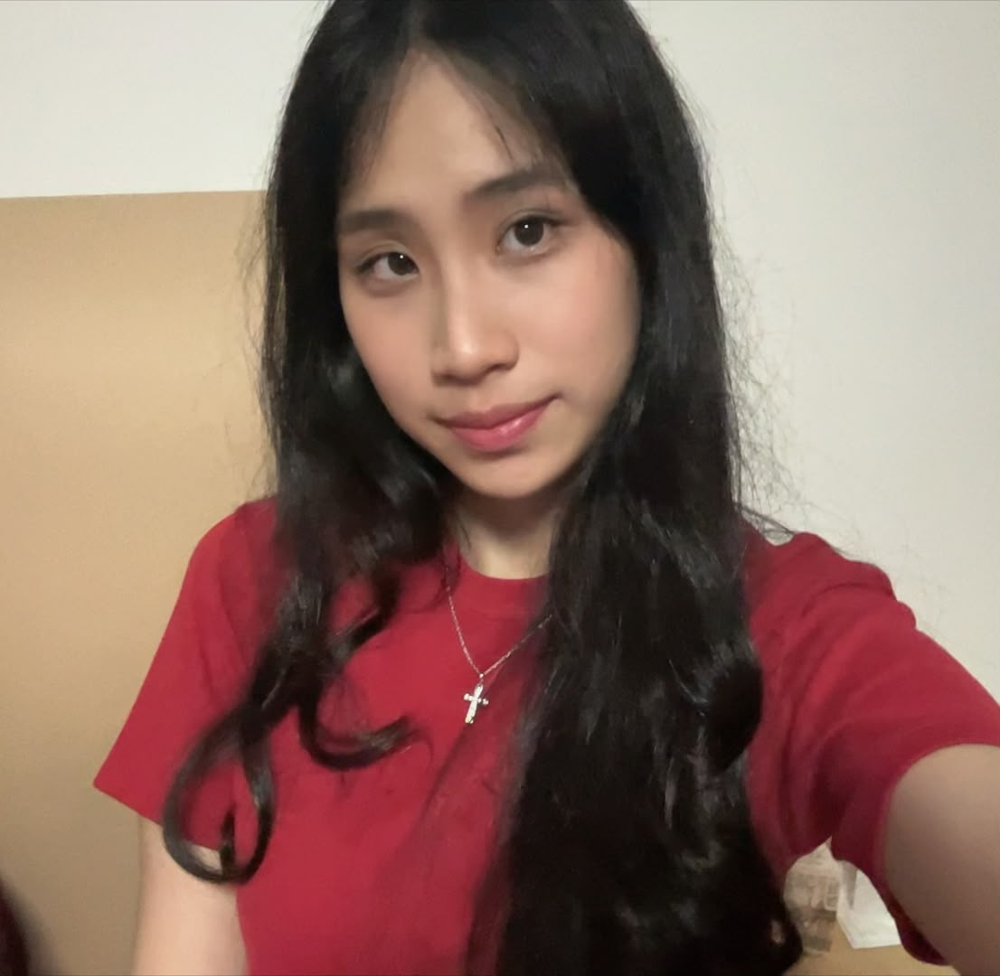
Shirly
Hai!! I’m Shirly, and I’m currently in my second year of Bachelor in Finance and Management. I love anything that makes me happy, whether it’s writing, reading, researching, poetry, or pretty things! I’ve been writing since primary school, and one of my writings even debuted in my 2022 school yearbook! Recently, I stopped writing and became more interested in composing poetry instead. I’m always up for challenges and I love trying new things. Also I’m huge on feelings, if you haven’t noticed from the amount of love I wrote about. I believe in being grateful for everything I have and thankful for everything that happens!!
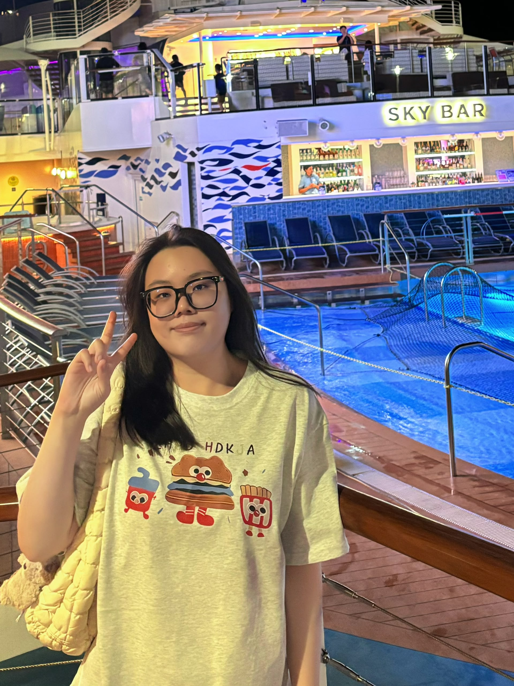
Emily
My name is Emily, and I'm a software engineering student who loves coding and cake. I fix bugs in my code, but real bugs? I run and hide. I bake cakes that sometimes look like pancakes, but I still eat them with joy. I love traveling to taste food from everywhere. Street food is my favourite, I don't care if it's fancy or not. On the badminton court, I swing hard and miss often, but I cheer like crazy when I hit. My friends say my code and cakes both need testing and hope. They're not wrong. I once spent three hours looking for a coding mistake and it was just a missing semicolon. I wanted to cry but I laughed instead. Life is fun, even when things go wrong. Oh, and I really, really hate insects. They creep me out. If I see a cockroach, I'm done. I will just leave the room and never come back. Also, I love online shopping way too much. My bank account cries, but my wardrobe is very happy.